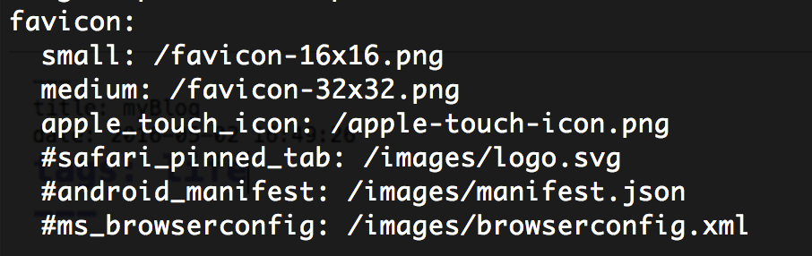
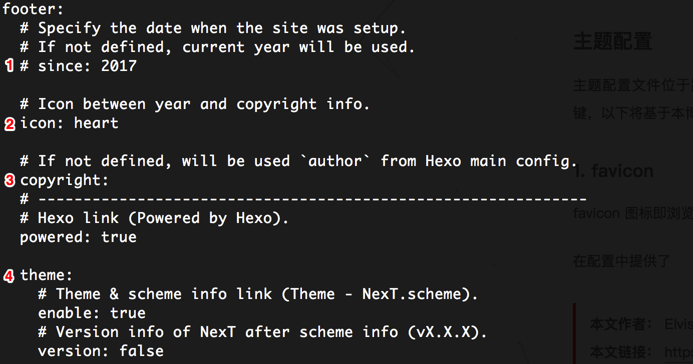
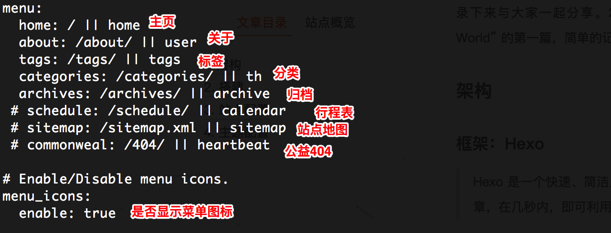
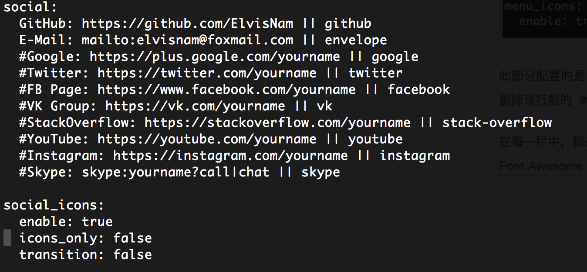
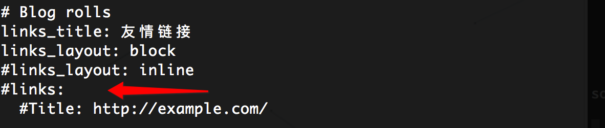
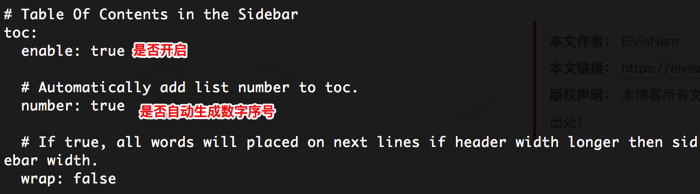
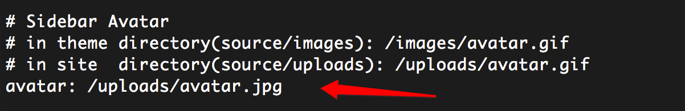
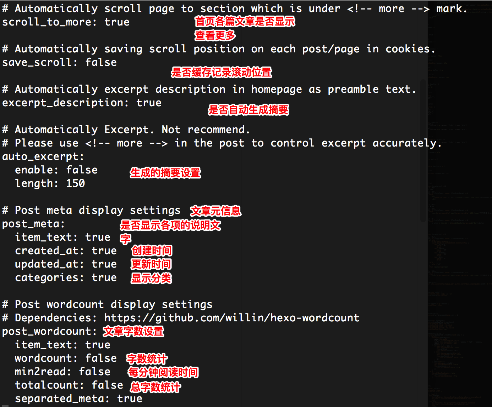
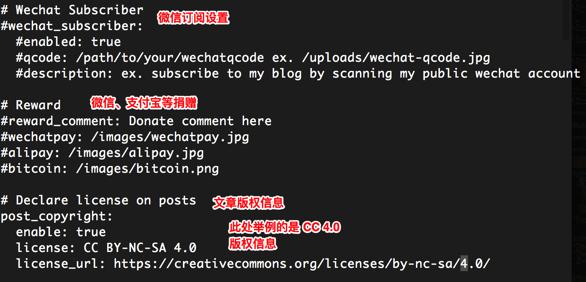
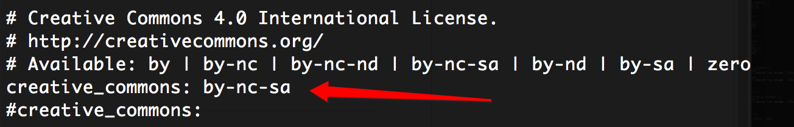

Hello World
从接触前端开始，就计划着开发一套自己的博客，从架构到设计，独一无二。
然而这一两年里，技术学习、求职、工作，一路走来，各个阶段都挤满了相应的日程。而“博客搭建”这种庞大计划一拖再拖（实际就是自己太懒）。
自己是一个不善于言辞表达的人，但在技术学习、工作开发中也会遇到一些 excited 的项目，想要记录下来与大家一起分享。2017 年底，最终选择了 Hexo 这款博客框架进行搭建。作为 “Hello World” 的第一篇，简单的记录 Hexo 的搭建流程及主题的自定义设置。
架构
框架：Hexo
Hexo 是一个快速、简洁且高效的博客框架。Hexo 使用 Markdown（或其他渲染引擎）解析文章，在几秒内，即可利用靓丽的主题生成静态网页。
主题：NexT
Hexo 是高效的静态站点生成框架，她基于 Node.js。 通过 Hexo 你可以轻松地使用 Markdown 编写文章，除了 Markdown 本身的语法之外，还可以使用 Hexo 提供的 标签插件 来快速的插入特定形式的内容。
搭建
Hexo 框架的搭建及主题的更换在官方文档“开始使用”一栏写的很详细了，在这不再做过多阐述。需要注意的是，这两个框架都依赖于：
- Node.js
- Git
两个环境。请确保先安装完这两个环境后，打开终端，再按照官方文档一步步输入指令进行搭建。
站点配置
站点配置文件位于博客目录根文件下的 _config.yml。这部分主要对站点的名称、描述、语言、时区、皮肤进行配置。这部分在 Hexo 的官方文档都有详细的说明。
需要注意的一点是，记得在 URL 配置部分将 url 改为自己站点的域名。此部分直接影响到框架自动生成站点的链接地址，比如版权声明部分生成的 URL。如果不进行改动，将按其默认值进行生成。
主题配置
主题配置文件位于路径 /themes/next/ 下的 _config.yml。这部分才是站点个性化配置的关键，以下将基于本博客的配置情况进行简单的介绍。
非程序员请注意，在配置文件中，# 号代表的是对该行的注释。因此，部分功能中需要去除该行前的 # 字符才可生效；对该行增加 # 字符可令其失效。但也需要鉴别该行文字是否为作者留下的真正注释解析。
1. favicon
favicon 图标即浏览器标签上的网页图标。

配置文件里提供了 6 种场景格式，后四种都是移动端的特定场景，我们实际只用更换前两种场景图标：small、medium。首先自己选定好一张图片后，进入 Favicon Generator. For real. 网站，按照网站里的说明步骤将生成多种格式的图标。将网站生成的名为 favicon-16x16.png、/favicon-32x32.png、favicon.ico 三张图片复制至你的博客目录 /source/ 下即可。
2. 网站底部 footer 配置

图中标记的第一点，用于配置网站的建设年份，填写好后删除该行前面的 # 字符即可生效
图中标记的第二点，是底部年份与自己名称之间的图标，可以进入 Font Awesome 中挑选自己喜欢的图标，将图标名进行替换。
图中标记的第三点、第四点，用于配置是否显示框架及主题信息（即：由 Hexo 强力驱动 | 主题 — NexT.Pisces 该行文字），还可以设置是否显示主题的版本信息。
3. 菜单栏

此部分配置的是网站菜单栏，共提供8大模块，可以根据自己的需要进行配置。若需要某一栏目，则删掉该行前的 # 字符，反之，若不需要某一栏目，则在相应行前加上 # 字符。
在每一栏中，都是有：菜单栏：菜单地址 || 菜单图标 的形式构成，若需要更改菜单图标，可以进入
Font Awesome 进行挑选替换。
4. 社交链接

配置自己的其他网站／邮件信息，不仅限于官方提供的几大类，还可以自行添加其他的网站信息。同样的，在 || 后的为 icon 值，可以自行进入网站进行配置。
5. 友情链接

配置友情链接。links_title，即更改“友情链接”这四个字的标题名；links_layout，即链接布局，block 表示一行展示一个链接；inline 则表示根据一行的宽度，展示多个链接。
图中箭头处则为链接的值信息，根据 标题：链接地址 的形式进行配置（箭头下的一行即为示例）。配置时注意去除箭头处该行的 # 字符。
6. TOC

TOC（Table Of Contents），即文章目录。开启后，在阅读文章时，在侧边栏会自动根据该篇文章的标题、列表等信息为你生成文章的目录信息。
7. 头像设置

在箭头处修改头像图片的链接地址即可。图片地址接受三种方式：
- 图片在网络上的绝对路径。
- 在博客的根目录下创建一个
uploads文件夹，将图片放置其中 - 在主题目录下创建一个
images文件夹，将图片放置其中
8. 文章设置


9. 博客版权

此处注意的是，在第 8 点有一个文章的版权设置，该设置是在每篇文章的末尾出现版权信息字端。而本处的设置是为博客的版权信息，会在首页的侧栏以图标的形式出现。
对于文章来说，最常用的版权为：**Creative Commons license**，目前已到 4.0 版本，可以根据自己的所需进行设置调整。
设置时，去除箭头指向的该行 # 字符。
10. 修改文章底部带 # 号的标签
每篇文章的标签信息都在底部生成，每个标签字端以 # 字符开始，个人感觉比较难看。打开文件：themes/next/layout/_macro/post.swig，搜索 rel="tag"># ,将 # 换成 <i class="fa fa-tag"></i> 即可生效。
1 | <div class="post-tags"> |
功能配置
1. 创建菜单项对应文件目录
打开终端，定位到博客根目录下，输入以下指令，此处以标签为例（tags）:
1 | $ # hexo new page <菜单名称> |
此时在 /source/ 文件夹下会出现一个相应的子文件夹（此例为tags）。进入该文件夹，编辑其中的 index.md 文件。
1 | --- |
默认情况下，文件内容如上所示。title 部分为该部分的标题，可以自行更改；date 为创建日期。而我们还需在 date 的下一行加一个 type 字端，值为相应的菜单值，如：
1 | type: tags |
编辑完保存后即可。对于菜单目录，“标签”、“分类”、“归档”，都会根据你的文章内容自动生成；“关于”需要自己编写其中的内容才行。
2. 创建文章
打开终端，定位到博客根目录下，输入以下指令
1 | $ hexo new [layout] <title> |
其中
layout指的是文章的布局，是一个可选的参数，默认情况下有三种选择：post、draft、page。post是最常用到的布局，也是没有指定layout时的默认值。通过该指令创建的文章将会生成在/source/_post文件夹下，直接编辑该文件进行写作即可。draft指的是草稿，通过该指令创建的文章，部署后不会在博客内生成。除非通过指定的指令将其转换为post类型才能在博客内展现。同样的，该指令生成的文章将会位于/source/_drafts文件夹下，直接编辑相应文件即可。page的概念相对较模糊，官网也没有给定详细的解释。在我的理解中，page主要用于将博客根据文章进行版块细分，产生新的 URL 路径。当然，这一部分我还需要多使用总结后再来进行详细描述。title指的是文章的标题。需要注意的是，如果标题内含空格，则需要将标题用引号引起来；如果不含空格，则可以不加引号。1
2$ hexo new post "My new blog" # 有空格的情况
$ hexo new post Blog # 没有空格的情况
2. 文章增加标签、分类信息
对于新创建的文章，其初始内容如下所示：
1 | --- |
在两个三横线内包裹的部分，是文章的元信息，这部分的内容会根据你的主题布局等在文章中展现出来。在第二个三横线下面，才属于文章的正文编写部分。我们给文章添加标签、分类等信息，就是要在三横线内部进行添加。
title 指的是文章标题；date 为文章创建时间（可能不会自动生成有）。
1 | --- |
上面是本文的元信息，其中有一个分类：个人博客，两个标签：Hexo、NexT。
设置多个分类时，注意每个分类前用字符 - 开头，并保持与 tags 相同的缩进（其实这就是 Markdown 的语法）。
但是要注意的是，Hexo 是不支持一个 post 指定多个分类的。如果你按照标签的层级写法，最终会生成多个分类，但是从第二个分类开始，后面的分类都属于前一个分类的子分类。如果这么使用了，可以进入“分类”菜单页面看到各个分类的层级关系。
3. 文章中添加图片
在文章中添加图片直接采用 Markdown 语法即可：
1 |  |
此处主要介绍如何生成图片的地址，有三种方法：
- 图片在网络上的绝对链接（CDN引用）。可以先将图片通过图床、自己购买的服务器放置网络上，然后直接复制该图片的 URL 链接即可。但是这种方式成本较高，部分图床应用都需要付费才能发布图片。
- 本地图片的绝对路径。“本地”是相对于你的博客站点来说。在你的博客根路径下，进入
source文件夹下，创建一个images文件夹，然后将你需要的图片放置在该文件夹下。之后你引用图片的地址即为：/images/图片名称 - 本地图片的相对路径。“本地”是相对于你的博客站点来说。首先进入你的站点配置文件
_config.yml，找到并配置以下内容：这一参数的含义表示：之后每次创建文章后，都会在1
post_asset_folder: true
/source/_post/文件夹下生成一个与你文章同名的资源文件夹。你可以将该篇文章需要饮用的资源（图片、音视频等）都统一放置在该文件夹下。而引用的图片地址直接写图片的名称即可。这种方式对每篇文章引用的图片资源较多时适合，便于整理。但是需要注意的是，该方法只能对于修改配置后的文章生效，对于之前生成的文章，即使你自己创建一个和文章同名的资源文件夹也是不行的。